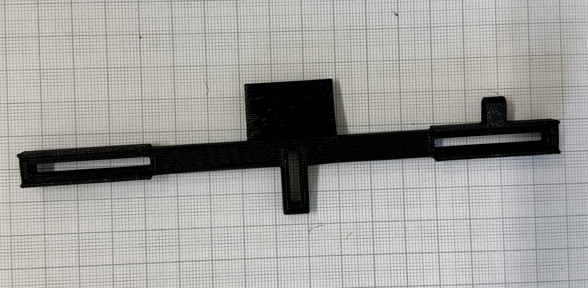
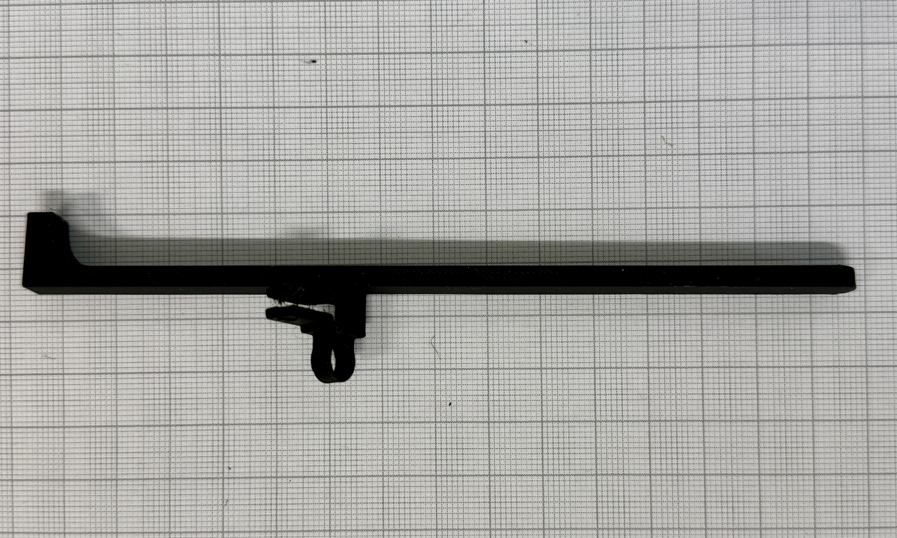
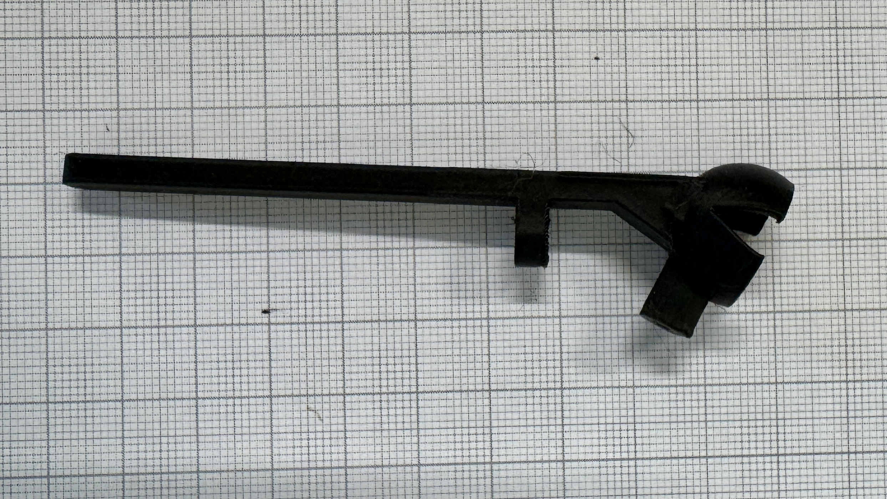
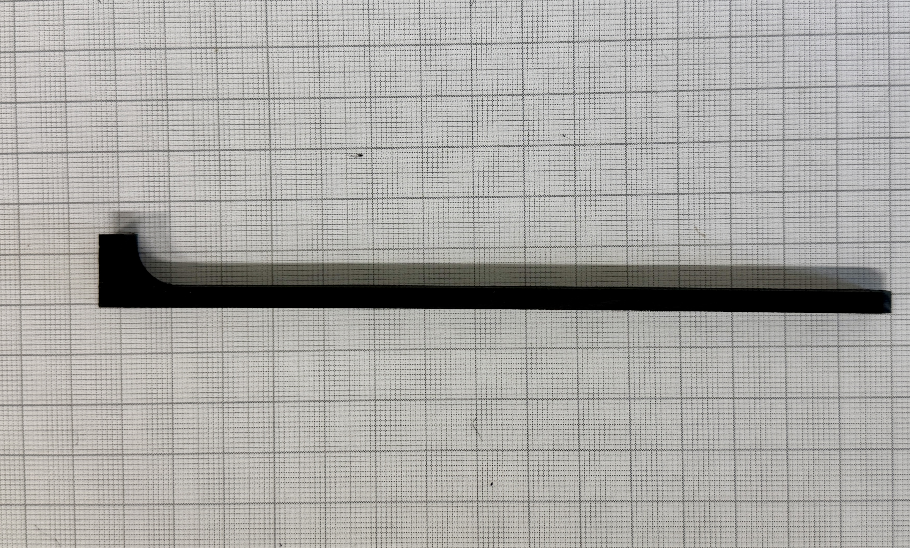
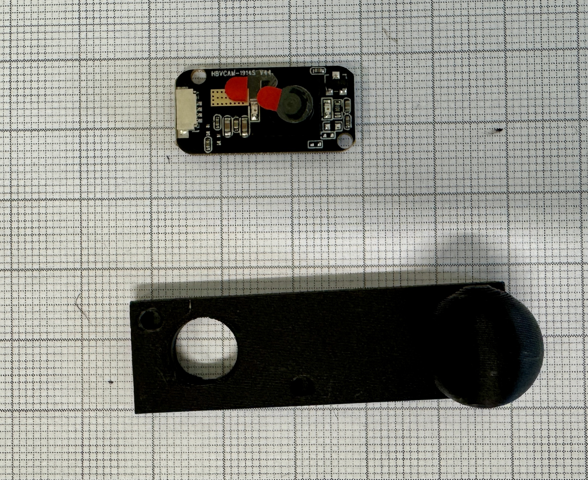
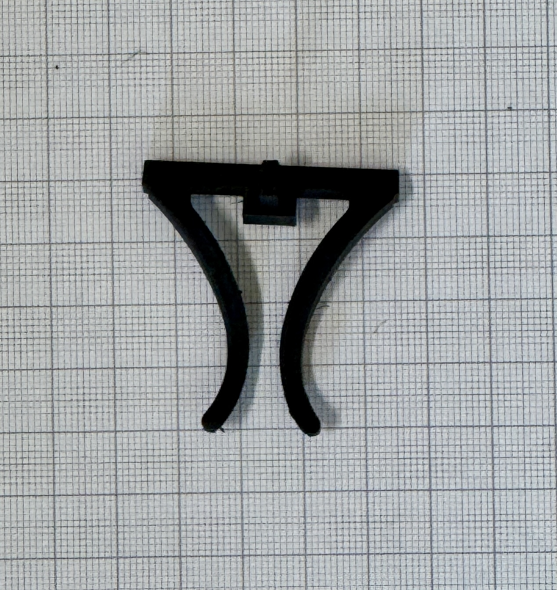
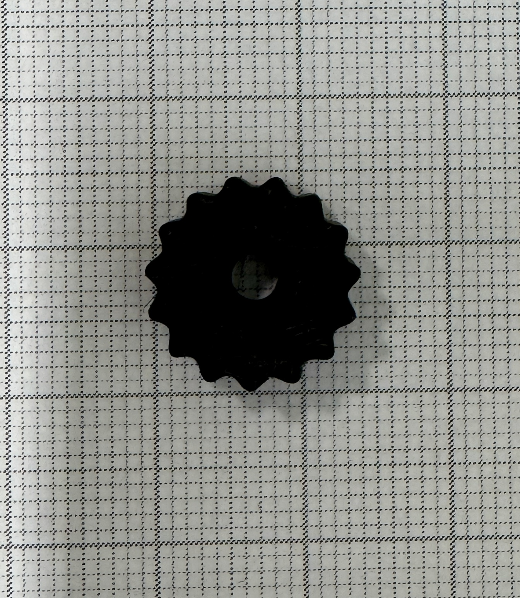
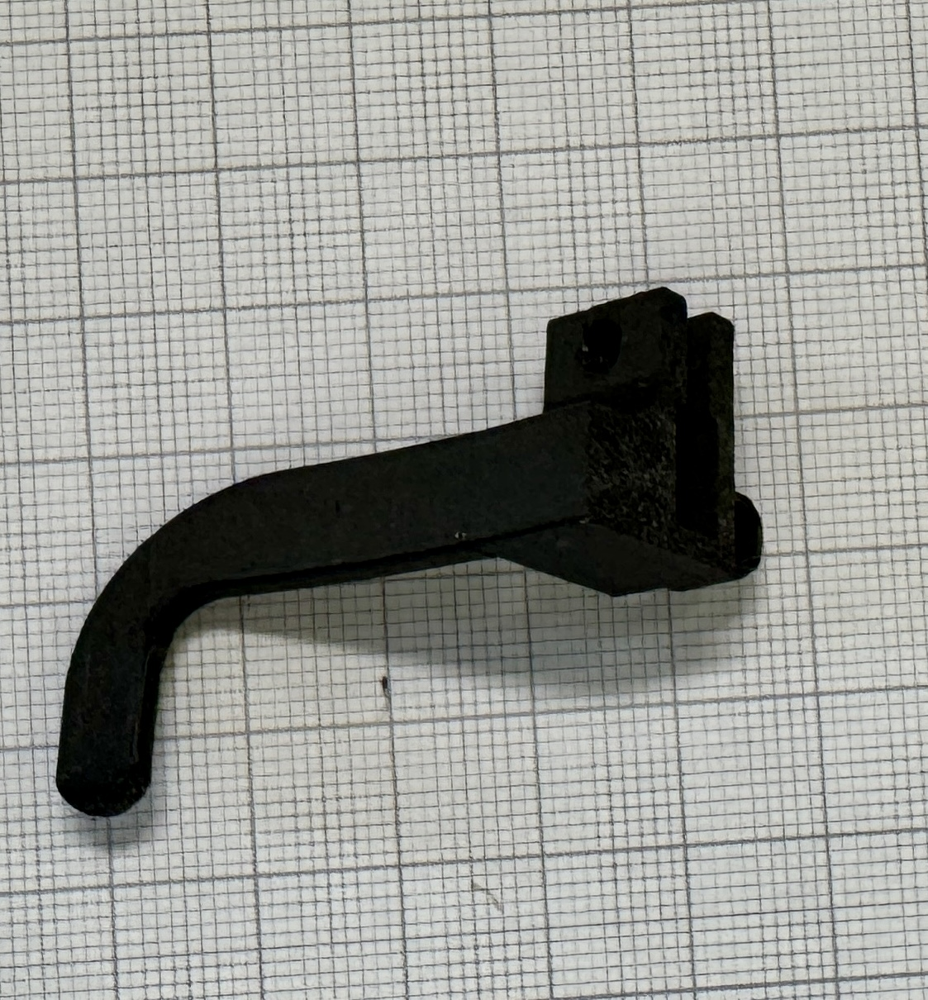
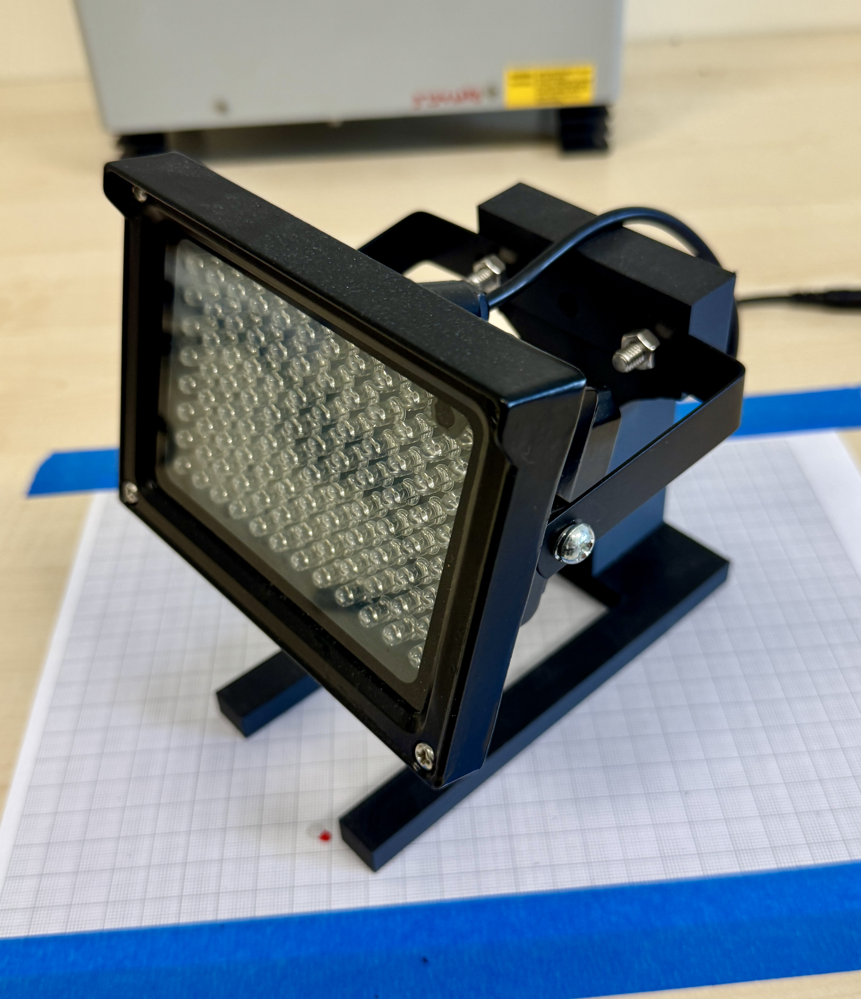

Printable files and model assets.
This page collects the main 3D model files for MEYELens, including printable parts, viewable assets, and links to external repositories or model-sharing platforms.
Model parts
You can use this section to list individual printable components.
| Preview | Part | Description | Material | Format | Link |
|---|---|---|---|---|---|
|
 |
Front panel | Main front structure of the MEYELens platform, designed to support the camera holder and central assembly. | PLA | STL | Download |
|
 |
Left arm | Left structural arm that connects to the camera arm and supports positioning the eye-facing camera in front of the eye. | PLA | STL | Download |
|
 |
Camera arm | Adjustable support arm that connects to the left arm and carries the eye-facing camera, allowing precise positioning. | PLA | STL | Download |
|
 |
Right arm | Right side arm that extends from the front panel to provide structural support and headset stability. | PLA | STL | Download |
|
 |
Camera holder | Main mounting piece used to secure and position the eye-facing camera on the platform. | PLA | STL | Download |
|
 |
Nose support | Front contact support that improves comfort and helps stabilize the device on the user’s face. | PLA/PETG | STL | Download |
|
 |
Adjustment knob | Hand-tightened knob used to adjust and lock movable parts without additional tools. | PLA | STL | Download |
|
 |
Ear support | Left-side support element that rests near the ear to improve fit and overall wearing stability. | PLA | STL | Download |
| Ear support | Right-side support element that rests near the ear to improve fit and overall wearing stability. | PLA | STL | Download | |
|
 |
External IR support | Mounting support for an external infrared light source used to improve eye illumination during recording. | PLA | STL | Download |
Print settings
Reference settings used to print the MEYELens frame.
The prototype shown here was printed using Bambu Lab Matte Black PLA. We used the standard Bambu Studio profile as a baseline and adjusted the infill to improve part rigidity while keeping print time reasonable.
| Filament | Bambu Lab Matte Black PLA |
|---|---|
| Layer height / nozzle | 0.2 mm layer height with a 0.4 mm nozzle |
| Walls / supports | 2 wall loops with supports enabled |
| Infill | ~50% gyroid infill |
| Material use / print time | ~55 g filament and ~3 hours total, depending on printer and settings |
External repositories
External pages where the models are also hosted.